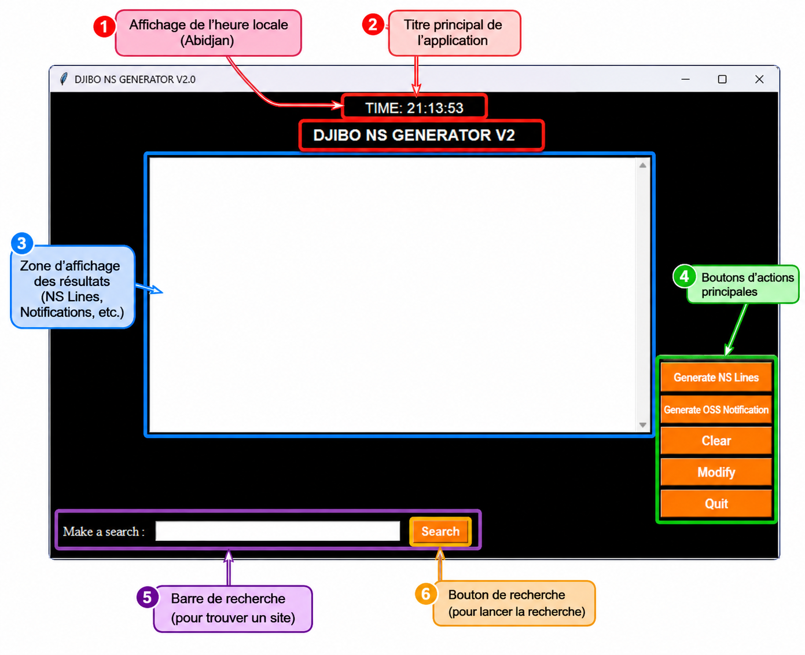

Application de bureau développée en Python pour automatiser le traitement des alarmes réseau et faciliter la génération des notifications Network Status (NS) et OSS. Elle centralise l'extraction des informations des sites depuis des exports Excel, la recherche instantanée, la gestion des sites partagés et la mise à jour des bases de référence.
Conçue avec Tkinter pour une prise en main rapide en salle de supervision réseau. Cliquez sur la capture pour l'afficher en plein écran.

AgrandirCentralisation de l'horloge temps réel d'Abidjan, de la zone d'édition des notifications NS/OSS, de la recherche multicritère par site et des commandes d'action rapide.
| Repère | Élément | Rôle & Actions associées |
|---|---|---|
| 1 | Affichage de l'heure locale | Affiche l'heure actuelle d'Abidjan en temps réel (gestion du fuseau horaire via pytz) avec rappels intégrés. |
| 2 | Titre principal | Identifie la version active de l'outil : DJIBO NS GENERATOR V2.0. |
| 3 | Zone d'affichage des résultats | Restitue les NS Lines générées, les notifications OSS structurées et les fiches détaillées des sites recherchés. |
| 4 | Boutons d'actions principales | Regroupe les 5 commandes : Generate NS Lines (depuis Excel), Generate OSS Notification, Clear, Modify (édition de site) et Quit. |
| 5 | Barre de recherche | Permet de saisir l'identifiant (Site ID) ou le nom d'un site réseau à consulter. |
| 6 | Bouton Search | Déclenche l'interrogation croisée des fichiers de référence pour afficher le statut et les métadonnées du site. |
Extraction des identifiants et noms de sites depuis la colonne MO Name d'un fichier d'alarmes .xlsx, récupération automatique de la région, adaptation du message selon le statut de partage (avec fournisseur associé) et comptage des occurrences par région.
Détermination de l'heure de début d'incident à partir de l'alarme la plus ancienne (Last Occurred (NT)), liste des sites impactés, ventilation par région et attribution automatique de la priorité : P1 (5 sites ou plus) ou P2 (moins de 5 sites).
Consultation instantanée d'un site (ID, nom, région, statut ACCEPTED ou FAILED, fournisseur et information FME). Intègre l'ajout assisté des sites inconnus et l'édition directe via le bouton Modify.
Suivi en direct de l'heure d'Abidjan accompagné de rappels automatiques à 10 minutes, 5 minutes et 1 minute avant chaque heure pile afin de garantir l'envoi ponctuel des rapports Network Status.
L'application croise les exports d'alarmes opérationnelles avec quatre fichiers de référence locaux afin d'enrichir automatiquement chaque notification d'escalade.
.xlsx) : Chargement via Pandas et OpenPyXL en ignorant les 5 premières lignes d'en-tête technique.re) : Nettoyage et extraction des identifiants/noms de sites depuis la colonne MO Name.Last Occurred (NT) pour isoler le début réel de l'incident.SiteRegions.csv et Shared sites.xlsx.Modify.| Fichier | Colonnes requises | Rôle dans le pipeline |
|---|---|---|
SiteRegions.csv |
Site_Name, REGION, Site_id (séparateur \t) |
Associe chaque site à sa région géographique et enregistre les nouveaux sites découverts. |
listofwrongsite2.xlsx |
SL ID |
Détermine automatiquement le statut opérationnel du site (ACCEPTED ou FAILED). |
Shared sites.xlsx |
SITE NAME, SITE ID, SHARE SITE |
Identifie les infrastructures partagées et le fournisseur tiers à mentionner dans l'escalade. |
FME.xlsx |
Name_Site, Site, FME |
Fournit les informations d'équipe terrain (Field Maintenance Engineer) associées au site. |